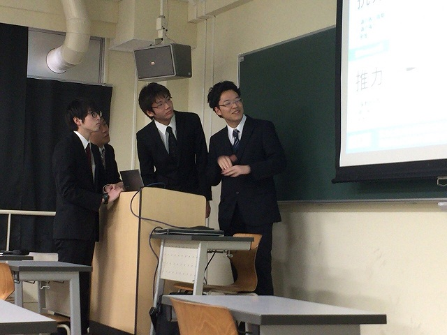
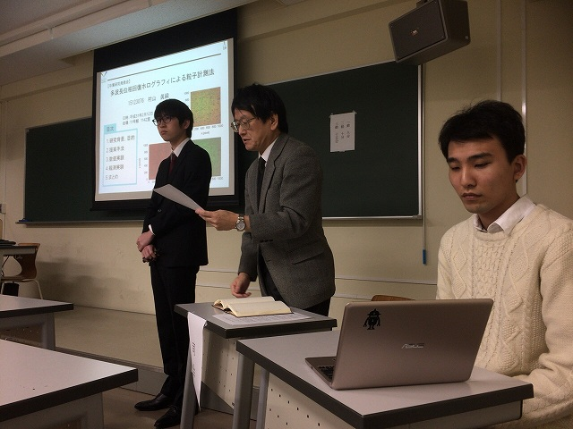
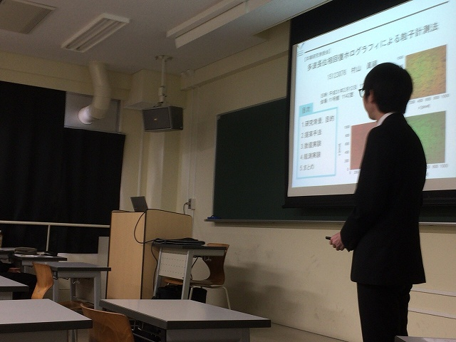
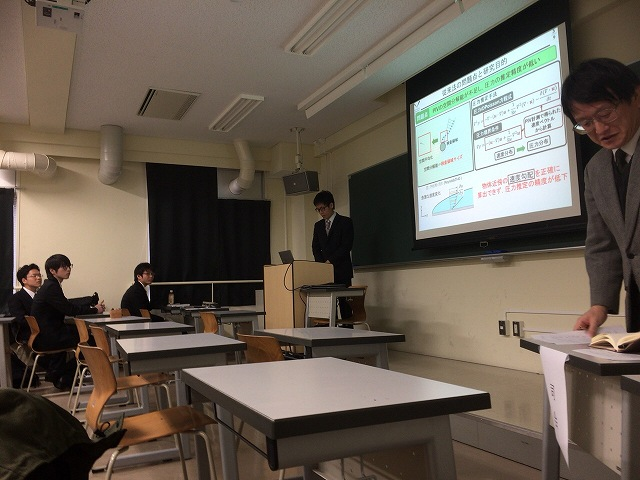
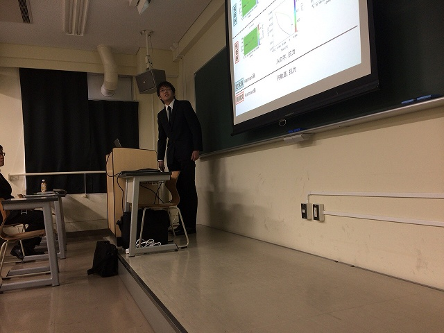
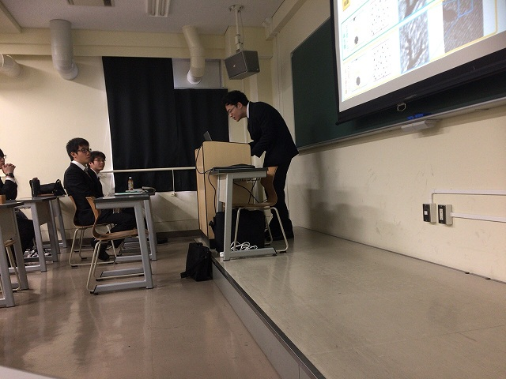

・ 平成30年度卒業論文発表会 (H31.02.12)
去年
は4人で今年も4人。今回はロコモーションが増えて計測・制御系の5研究室合同です。それぞれがなかなかの力作ぞろいでした。 修士での活躍が楽しみになります。

まずは環境構築

最初はM山さんで

ホログラフィ

Y山さんのPIVから圧力推定

I田さんの振動翼と推力

最後はM四さんのホログラフィとミジンコ
BACK
© Measurement System Laboratory, Kyoto Institute of Technology.